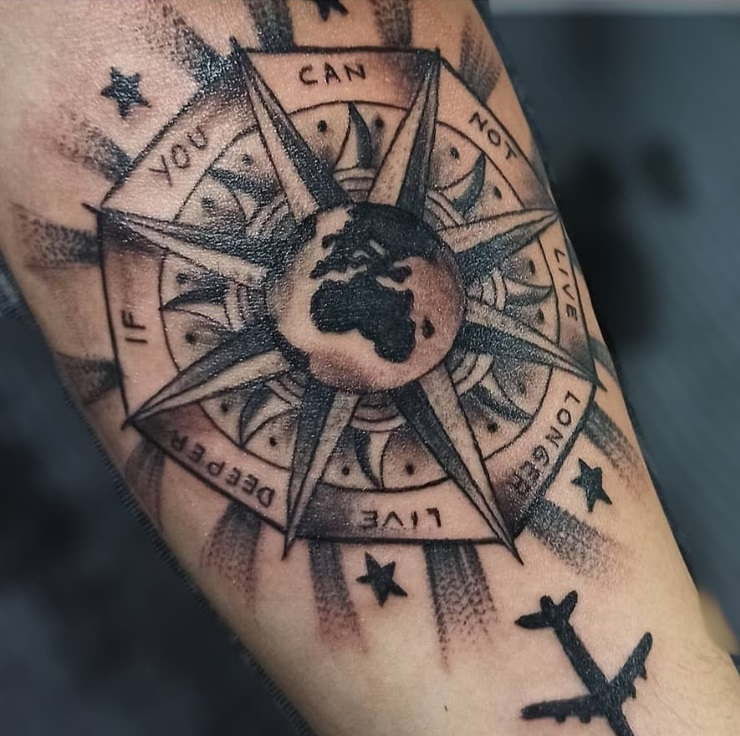
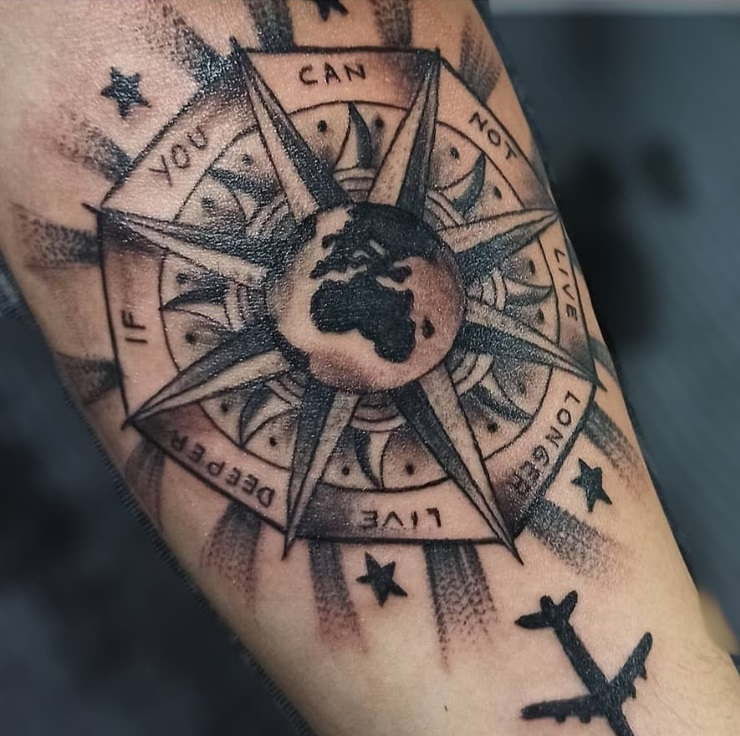

Me dedico a darle forma a tus ideas para que puedas lucirlas en tu piel.
Los tatuajes ornamentales son aquellos con un estilo geométrico y abstracto. Son estilos que son el resultado de mezclar temáticas geométricas realizadas con mezclas de estilos. Por ello podemos encontrar tatuajes ornamentales realizados con estéticas dotwork.
Tal como su nombre lo señala, la técnica para practicar el estilo de tatuajes black & grey (negro y gris, en castellano) consiste en el uso exclusivo de tinta negra que, diluída en distintas proporciones, da como resultado diversas tonalidades, volumen y multidimensionalidad a sus diseños a través de definición de luces, sombras y fondos; vinculando muchas veces sus resultados con los de otro estilo casi tan popular como es el tatuaje realista.
El estilo de tatuaje realista es uno de los más clásicos y con más recorrido dentro del mundo del tatuaje. Igual que cuando pensamos en el estilo pictórico, los diseños de tatuajes realistas son la representación más precisa del mundo real. Luces y sombras, mucho detalle y un uso exquisito de los colores, del negro y los grises son algunas de las características del tatuaje realista.
Hay muchos motivos por el que podemos desencantarnos con nuestro tatuaje. Desde una decisión impulsiva que nos lleva a tatuarnos algo de lo que después nos arrepentimos, a una buena idea mal ejecutada o que cicatrizó de forma deficiente. Desde un diseño mal hecho por un mal tatuador, o el nombre de una persona que ya no queremos que siga en nuestra vida, hasta un diseño que en su momento era de lo más moderno, pero que ahora está pasado de moda y ya no nos gusta. ¿Y qué hacer en estas situaciones? Pues tenemos dos opciones: o resignarnos y aceptar que vamos a convivir con nuestro viejo y feo tatuaje para siempre… o intentar cambiarlo por un diseño que nos guste más.
 
